Cold chain transport
Temperature-controlled movement for fresh produce, supermarket, fast-food and aged-care supply chains.
Since 2010 · Australian owned · 24/7 operation
Nationwide cold-chain transport and logistics, engineered for reliability, visibility and precision.
Trusted by Australia’s finest
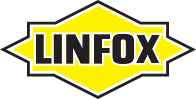
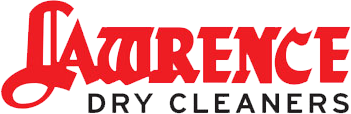
Welcome to Flash Line
Flash Line Transport manages every stage of the supply chain — from procurement and warehousing to transport and final distribution — with advanced tracking, disciplined operations and a team built for time-critical freight.
Procurement, warehousing, transport and distribution aligned under one operating rhythm.
Technology-led tracking keeps clients informed from pickup to final delivery.
Cold-chain handling for supermarkets, fast food, aged care and industrial partners.
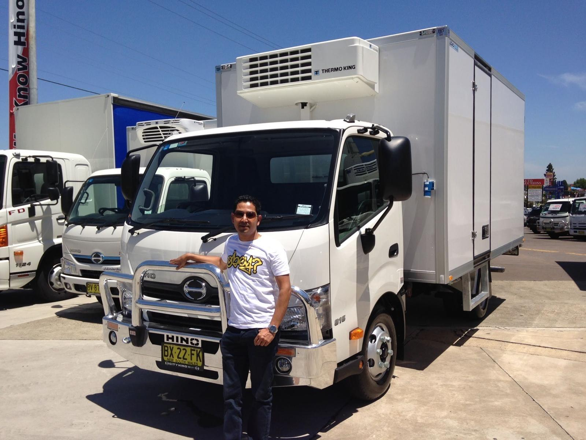
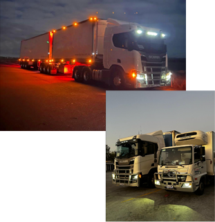
What we do
Temperature-controlled movement for fresh produce, supermarket, fast-food and aged-care supply chains.
Direct Sydney–Melbourne services and expanding national corridors with reliable scheduling.
Sydney metro, Queensland and regional runs built around delivery windows and product integrity.
Procurement-to-distribution coordination that reduces handling, cost and delivery friction.
Tailored transport programs for industrial leaders, food networks and essential service providers.
Always-on coordination, dispatch and support for freight that cannot wait.
Area we cover
From Parramatta to Victoria, Queensland and regional New South Wales, Flash Line connects major transport routes with dependable metro and regional coverage.
Plan a route with us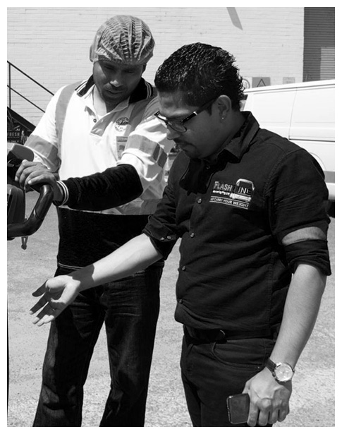
Our story
Founder Indy Dasanayaka arrived in Australia in 1998 to study business and began his logistics journey at Flemington Markets. What started with fresh produce distribution became a disciplined transport business built on trust, family values and reliable service.
Arrives in Australia; learns fresh produce logistics at Flemington Markets.
Flash Line Transport begins operating with a reliability-first mindset.
Fleet, direct services and national partnerships continue to expand.
A nationwide cold-chain provider serving essential supply chains.
Fleet gallery
Modern refrigerated vehicles, tracked operations and disciplined maintenance for freight that arrives right.
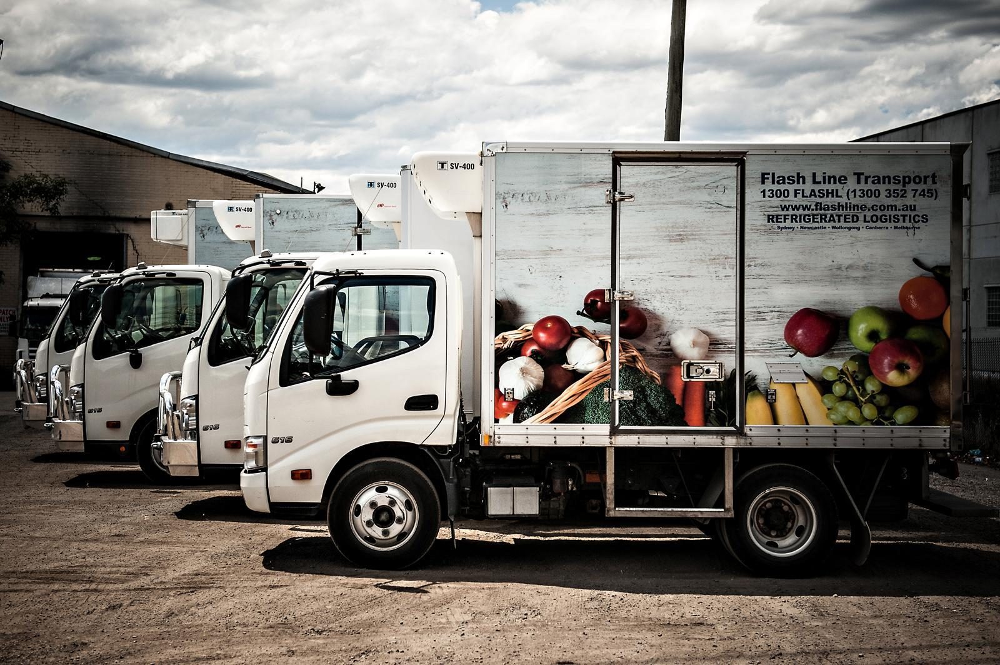
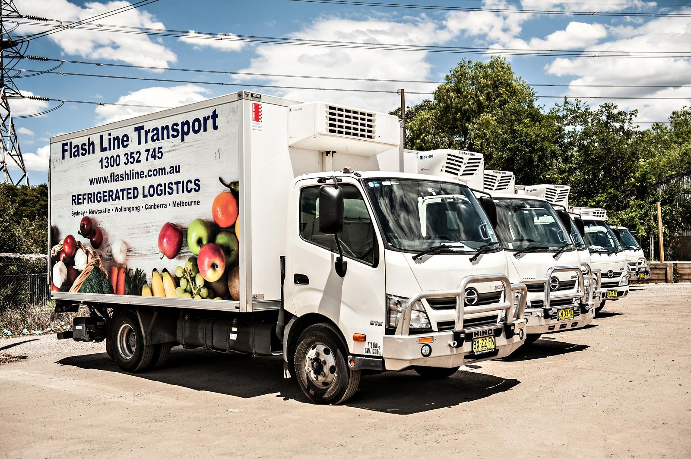
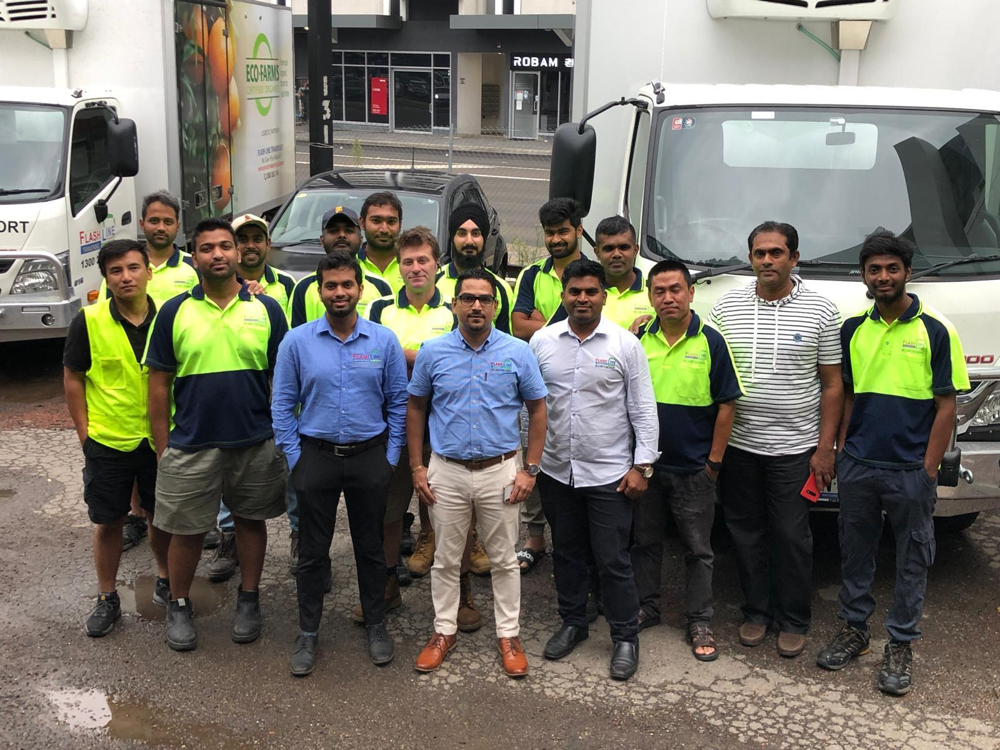
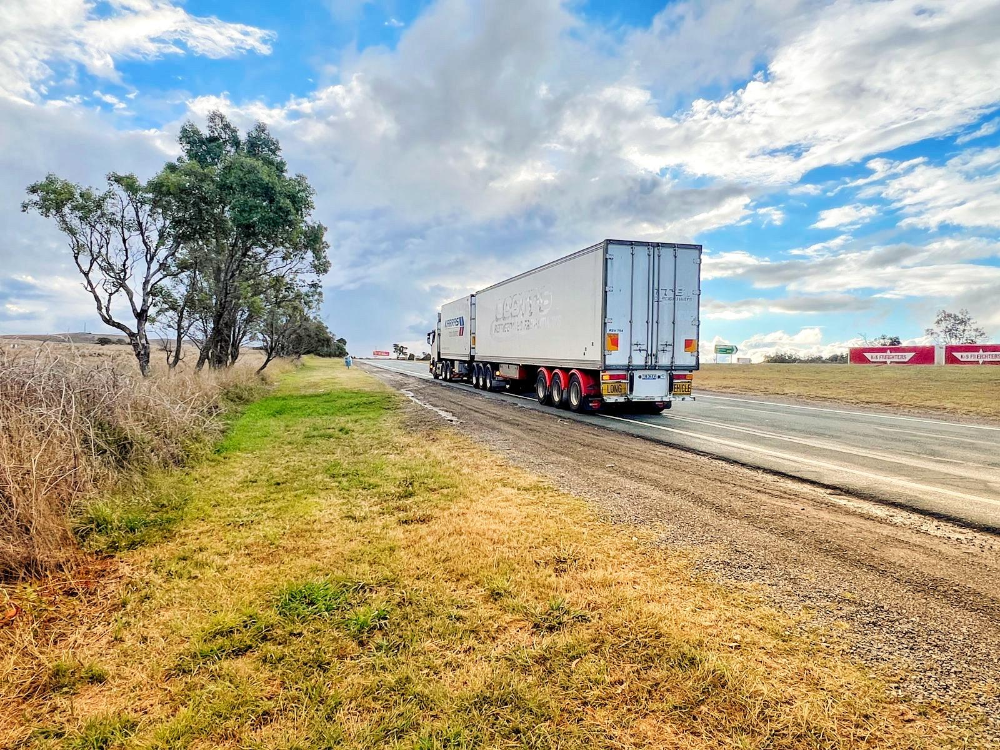
Our team
Drivers, coordinators, dispatch and support staff treat Flash Line like family. That ownership culture is why clients get consistent communication, careful handling and dependable outcomes.
“A passionate team who treat this company not just as a workplace, but as their own.”
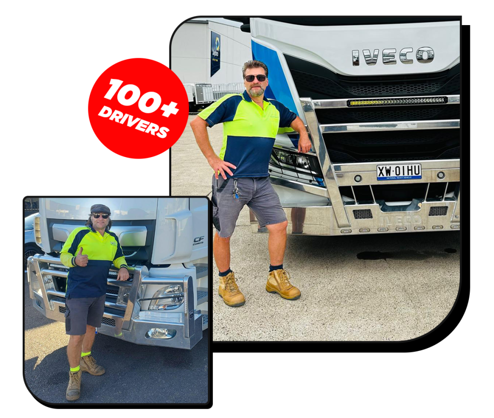
Our clients
Fresh produce logistics and national supply support.
Transport services supporting Linfox and sub-brand operations.
Reliable operator support across HDS logistics programs.
Sydney metro, Central West and Tarcutta customer coverage.
Customer transport across Sydney metro and Queensland.
Sydney metro, Canberra and Newcastle service coverage.
News
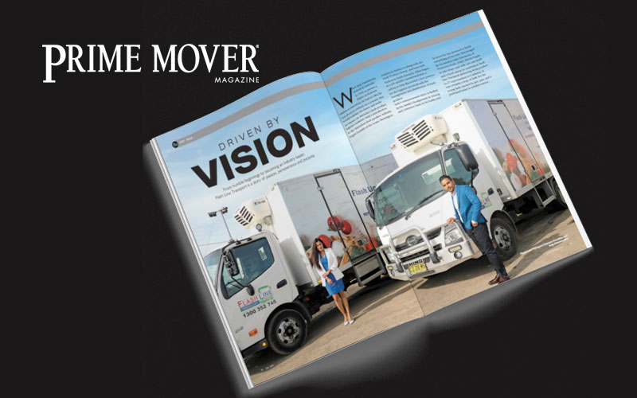
Flash Line Transport’s expanding network and industry leadership across Australia.
Sydney–Melbourne direct services for faster, more efficient interstate freight.
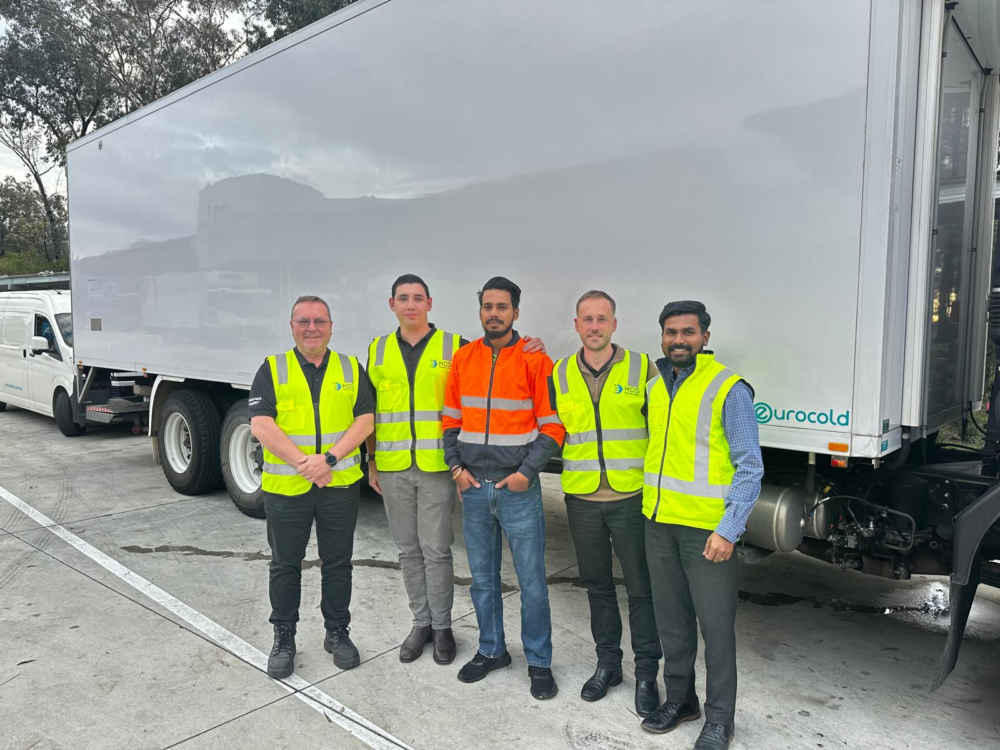
Recognised for operational excellence, fleet safety and service reliability.
Contact
Tell us what you need moved, where it needs to go, and how often. We’ll come back with a practical transport plan.
Logo preview